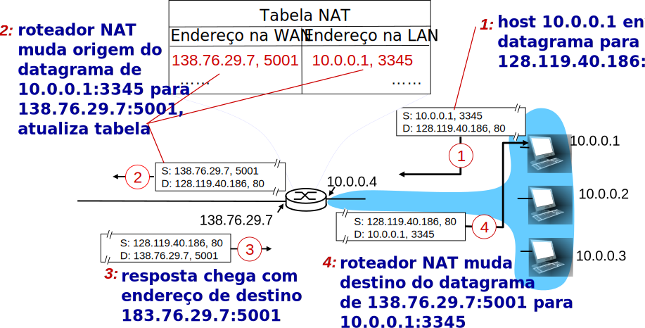
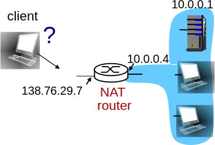
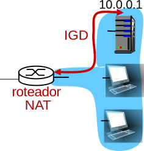
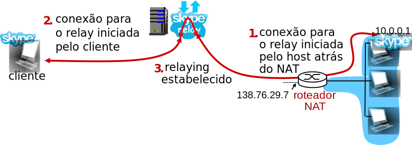

Material adaptado a partir dos slides originais de J.F Kurose and K.W. Ross.
Revisão da Última Aula...
Protocolos da Camada de Rede:
Vários contribuem.
Protocolos de roteamento.
IP.
ICMP.
Protocolo IP:
Define convenções.
Formato de datagrama.
Endereçamento.
Datagrama IP:
Checksum apenas do cabeçalho.
Campo de opções, tamanho variável.
TTL (time-to-live).
Fragmentação:
Quebrar datagramas grandes.
Adequa a limitações de cada enlace.
Remontados apenas no destinatário.
Endereçamento IP:
32 bits.
Associados a interfaces.
Prefixo identifica a sub-rede.
CIDR, máscara de sub-rede.
DHCP:
Protocolo de auto-configuração.
Atribuição dinâmica de endereços IP.
Roteador de primeiro salto.
E mais configurações.
Cliente-servidor.
Roda sobre UDP.
Mensagens em broadcast.
Endereçamento hierárquico:
Sub-redes são divididas.
Novas sub-redes menores.
Simplifica anúncio de rotas.
NAT
NAT: Network Address Translation
Todos os datagramas deixando a rede local possuem o mesmo único endereço de origem: 138.76.29.7.
Diferenciação através do número de porta de origem.
Datagramas com origem ou destino nesta rede possuem endereços de origem, destino da sub-rede 10.0.0/24.
NAT: Motivação
Rede local pode utilizar um único endereço, do ponto de vista do mundo externo.
Não é necessária uma faixa de endereços do ISP: um único endereço IP para todos os dispositivos.
Pode-se alterar os endereços dos dispositivos locais sem notificação ao mundo externo.
Pode-se mudar de ISP sem que os endereços dos dispositivos locais sejam alterados.
Dispositivos dentro da rede local não são explicitamente endereçáveis, visíveis ao mundo externo.
Um (pequeno) benefício de segurança.
NAT consegue lidar com a escassez de endereços IPv4.
NAT: Implementação
Um roteador que realiza NAT precisa:
Datagramas que saem:substituir(IP de origem, porta de origem) de cada datagrama para (IP do roteador, nova porta de origem).
Nó remoto respoderá utilizando (IP roteador, nova porta de origem) como destino.
Armazenar (na tabela NAT) todo mapeamento feito entre (IP de origem, porta de origem) e (IP roteador, nova porta de origem).
Datagramas que chegam:substituir(IP roteador, nova porta de origem) nos campos de destino do pacote por (IP de origem, porta de origem) armazenado na tabela NAT.
NAT: Exemplo

NAT: Análise
Campo de número de porta: 16 bits.
65000 conexões simultâneas usando um único endereço IP!
NAT é controverso:
Roteadores só deveriam processar até a camada 3 (camada de rede).
NAT viola o argumento fim-a-fim.
Muitas vezes, o NAT precisa ser levado em consideração por projetistas de aplicações, e.g., aplicações P2P.
Escassez de endereços deve ser resolvida pela adoção do IPv6.
NAT Traversal (I)
Cliente quer se conectar ao servidor com endereço 10.0.0.1.
Endereço 10.0.0.1 local para a LAN (cliente não pode usá-lo como endereço de destino).
Apenas um endereço visível externamente: 138.76.29.7.
Solução 1: configurar NAT estaticamente para encaminhar conexões que chegam para uma dada porta para o servidor.
e.g., (138.76.29.7, porta 2500) sempre é traduzido (e encaminhado) para (10.0.0.1, porta 25000).

NAT Traversal (II)
Solução 2:Internet Gateway Device Protocol (IGD).
Parte do Universal Plug and Play (UPnP).
Permite que host atrás de NAT:
Aprenda endereço IP público (138.76.29.7).
Adicione/remova mapeamentos de porta (com tempos de lease).
i.e., automatizar configuração estática dos mapeamentos do NAT.

NAT Traversal (III)
Solução 3:relaying (usado, por exemplo, no Skype).
Cliente atrás do NAT estabelece conexão com host intermediário.
Cliente externo se conecta ao mesmo host intermediário.
Host intermediário (relay) faz a ponte entre pacotes das duas conexões.

ICMP
ICMP: Internet Control Message Protocol
Usado por hosts e roteadores para comunicar informações no nível de rede.